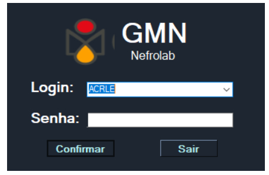

RNC
Relatório de não conformidade
Programa desenvolvido pelo GMN Análises Laboratoriais para registrar e acompanhar não conformidades.
DownloadGMN
Análises Laboratoriais
Login
Utilize o login do sistema 'Ocomon' para entrar no 'RNC'.

Cadastrando uma RNC
Utilize o botão 'Cadastrar' para iniciar o processo de criação de uma RNC.
Caso tenha alguma duvida em relação ao preenchimento consulte documento interno: 'ADM02 - Tratamento de não conformidades'
* Todos os campos são obrigatórios

Ações
Cada RNC pode ter varias 'Ações', cada uma com previsão, avaliação de eficácia e observações gerais

Consulta e atualização
Após selecionar a RNC desejada, o usuário pode adicionar mais ações, ou continuar complementando ações já em vigor.
Cada ação tem sua própria avaliação de eficácia, caso seja necessário uma nova não conformidade, adicionar para rastreio.

Encerrando uma RNC
Após a RNC tenha sido resolvida, pode-se identificar novos relatórios ligados á ação.

Passo a Passo
| 1 - Faça o login com o usuário de sistema |
|---|
| 2 - Clique no botão cadastrar |
| 3 - Preencha todos os dados de acordo com 'ADM02' |
| 4 - Quando necessário crie ações para resolver a não conformidade |
| 5 - Não se esqueça de salvar tanto a ação quanto o relatório de não conformidade |
| 5 - Caso tenha quaisquer duvidas, consulte o ADM02 - Tratamento de não conformidade, link abaixo. |
ADM02 - Tratamento de não conformidades
Copyright © 2020 GMN Análises Laboratoriais | Desenvolvido por Felipe Magalhães